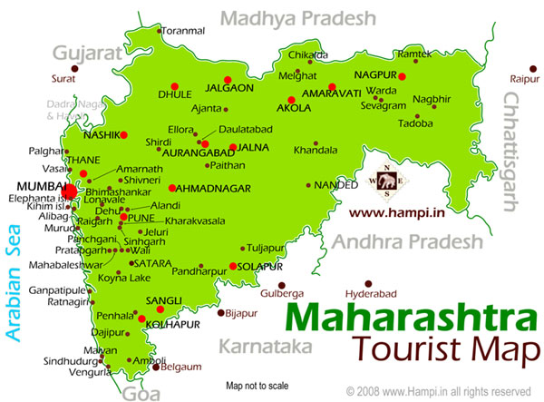

LET'S HAVE A LOOK AT THE TOUR MAP
WHERE TO VISIT , WHAT TO SEE?
SOME HOT PICKS(#HAVE_TO_VISIT)
- AJANTA ELLORA CAVES - CAVE OAINTING AND SCULPTURES
- MAHABALESHWAR - WEST GHATS FAMOUS FOR STRAWBERRIES
- ALIBAG - COASTAL TOWN WITH SANDY BEACHES AND FRESH UNPOLLUTED AIR
- LAVASA - INDIA'S NEWEST HILL STATION
- SHIRDI - HOME OF GREAT SAINT SAI BABA
- AURANGABAD - MINI TAJ MAHAL DESTINATION
- BHANDARDARA - HAS ALL THE NATURE'S BLESSINGS
- PUNE - EDUCATION TOWN
- GANGATIPULE - TEMPLE OF LORD GANESHA ALONG THE COAST LINE
- KASHID - KONKAN COAST WITH WHITE SAND AND BLUE WATER BEACHES
- TARKARLI - MAHARASHTRA'S POPULAR SEA FORT
- RAIGAD - HISTORICALLY RICH AS CHATRAPATI SHIVAJI MAHARAJ WON THIS PLACE IN 1656
- TODOBA NATIONAL PARK - FAMOUS FOR TIGERS
- NAGPUR - JUICY VARIETIES OF MANGOES
- MALVAN - SINDHUDURG FORT OF CHATRAPATI SHIVAJI MAHARAJ
- KOLHAPUR - MAHALAKSHMI TEMPLE
- CHIPLUN - MANGO GROVES NEXT TO LAKE VASHISHTI
- CHIKHALDARA - ONLY COFEE GROWING AREA WITH PANORAMIC VIEWPOINTS
- RATNAGIRI - HILLS ,SEA SHORES,HOT WATER SPRINGS
OTHER_ATTRACTIONS
- PANCHGANI - FIVE HILLS SURROUNDING THIS PLACE FAMOUS FOR SUNRISE AND SUNSET POINTS
- LONAVALA - FAMOUS HILL STATION FOR HIKING
- RAJMACHI - FORTIFIED PEAKS
- KHANDALA - SCENIC GREEN VALEYS
- NASHIK - RELIGIOUS HINDU CITY
- KOLAD - ADVENTURE SPOT FOR WATER RAFTING
- KAMSHET - PARAGLIDING ACTIVITIES
- BHIMASHANKAR - JYOTILINGAM SHRINES OF LORD SHIVA
- SURYAMAL - HIGGEST PEAK OF THIS REGION LOCATED IN THANE
- DAPOLI
- MALSHEJ GHAT